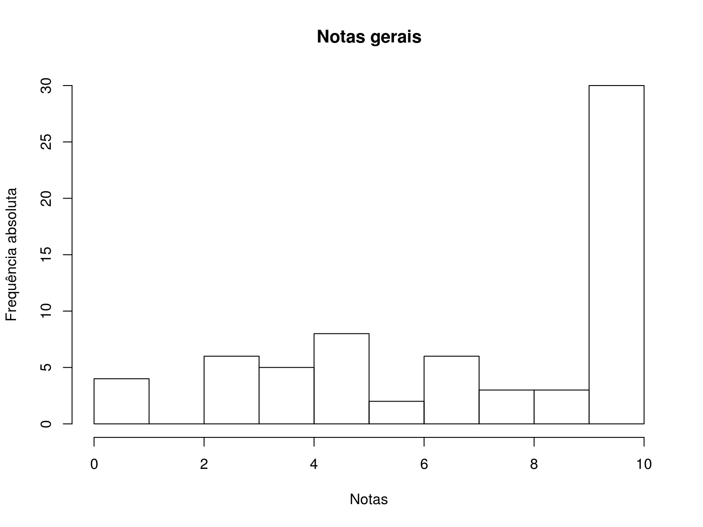
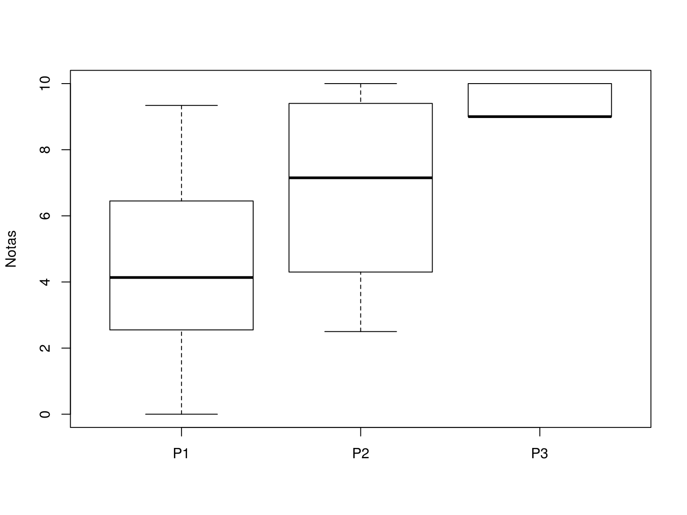

Notas
Histograma e box plot geral

Resumo dos cinco números, média, desvio-padrão, e número de provas não realizadas (NA):
Min Q1 Q2 Q3 Max Média s NAs
0.00 4.05 7.50 9.00 10.00 6.67 3.00 29.00 Resumos por prova
Box plot de cada prova

Resumo dos cinco números, média, desvio-padrão, e número de provas não realizadas (NA):
P1 P2 P3
Min 0.00 2.50 9.00
Q1 2.55 4.30 9.00
Q2 4.13 7.15 9.00
Q3 6.45 9.40 10.00
Max 9.34 10.00 10.00
Média 4.41 6.86 9.29
s 2.73 2.59 0.46
NAs 6.00 12.00 11.00Notas individuais
Na tabela abaixo estão as notas das 3 avaliações realizadas. A frequência (F) é o percentual de presença.
P1Eé a nota da prova escrita feita em sala (valendo 9.0).P1Dé a nota do Diagrama de Hasse entregue (valendo 1.0).P1Pé a nota da prova prática (valendo 10.0).P1é a nota final: \((\textrm{P1E} + \textrm{P1D}) \times 0.7 + \textrm{P1P} \times 0.3\).P2é a nota da segunda prova escritaP3é a nota do experimento
A média (M) foi calculada com estas 3 notas, e já arredondada para cima nos seguintes casos:
- Médias finais maiores ou iguais a 6,5 e menores do que 7,0 foram arredondadas para 7,0, SE a frequência do aluno foi maior ou igual a 75%.
- Médias finais maiores ou iguais a 3,5 e menores do que 4,0 foram arredondadas para 4,0, SE a frequência do aluno foi maior ou igual a 75%.
Observação: a frequência só foi utilizada aqui para critério de arredondamento de nota. Mesmo que o aluno tenha frequência abaixo de 75%, é permitido fazer o exame.
A coluna de situação (S) indica se o aluno foi aprovado (Ap), ficou em exame (Ex), ou foi reprovado (Re).
Após o exame: as notas dos exames estão na coluna E. A média final (MF) é a mesma para quem não fez exame, e é a média entre a média final (M) e a nota do exame (E) para quem fez exame. A média final arredondada (MFA) é a nota que será lançada no sistema. A coluna SF mostra a situação final dos alunos após o exame.
## Mostra tabela
kable(notas2, align = "c", digits = 2)| Matrícula | P1E | P1D | P1P | P1 | P2 | P3 | M | F | S | E | MF | MFA | SF |
|---|---|---|---|---|---|---|---|---|---|---|---|---|---|
| 20124664 | 0.50 | 1.00 | 3.5 | 2.10 | NA | NA | 0.70 | 83 | Re | NA | 0.70 | 7 | Re |
| 20124667 | NA | NA | NA | NA | NA | NA | 0.00 | 0 | Re | NA | 0.00 | 0 | Re |
| 20124692 | 0.00 | NA | NA | 0.00 | NA | NA | 0.00 | 93 | Re | NA | 0.00 | 0 | Re |
| 20135636 | 0.00 | NA | NA | 0.00 | 2.5 | 9 | 3.83 | 59 | Re | NA | 3.83 | 39 | Re |
| 20137507 | 0.70 | 0.75 | 9.5 | 3.87 | 4.0 | 9 | 5.62 | 79 | Ex | 7.15 | 6.38 | 64 | Ap |
| 20137520 | NA | NA | NA | NA | NA | NA | 0.00 | 66 | Re | NA | 0.00 | 0 | Re |
| 20137525 | 8.05 | 1.00 | 10.0 | 9.34 | 10.0 | 9 | 9.45 | 100 | Ap | NA | 9.45 | 95 | Ap |
| 20137526 | 0.00 | NA | 8.5 | 2.55 | NA | NA | 0.85 | 86 | Re | NA | 0.85 | 9 | Re |
| 20137581 | 0.20 | 0.75 | 5.0 | 2.17 | 2.5 | 9 | 4.56 | 93 | Ex | 0.00 | 2.28 | 23 | Re |
| 20137583 | 0.50 | 0.75 | 6.5 | 2.83 | NA | 9 | 4.00 | 79 | Ex | 0.00 | 2.00 | 20 | Re |
| 20137584 | NA | NA | NA | NA | NA | NA | 0.00 | 86 | Re | NA | 0.00 | 0 | Re |
| 20137598 | 1.25 | 0.75 | 8.0 | 3.80 | 6.3 | 9 | 6.37 | 86 | Ex | 4.20 | 5.29 | 53 | Ap |
| 20137599 | 2.50 | 1.00 | 8.0 | 4.85 | 3.8 | 9 | 5.88 | 79 | Ex | 4.70 | 5.29 | 53 | Ap |
| 20149080 | 4.75 | NA | 4.0 | 4.52 | NA | NA | 1.51 | 62 | Re | NA | 1.51 | 16 | Re |
| 20149096 | NA | NA | NA | NA | NA | NA | 0.00 | 52 | Re | NA | 0.00 | 0 | Re |
| 20149099 | 3.00 | 0.75 | 5.5 | 4.28 | 4.6 | 9 | 5.96 | 93 | Ex | 5.80 | 5.88 | 59 | Ap |
| 20149107 | 1.25 | 0.50 | 7.5 | 3.47 | 7.5 | 9 | 7.00 | 83 | Ap | NA | 7.00 | 70 | Ap |
| 20149119 | NA | NA | NA | NA | NA | NA | 0.00 | 38 | Re | NA | 0.00 | 0 | Re |
| 20149122 | 0.50 | NA | NA | 0.35 | 5.5 | 9 | 4.95 | 83 | Ex | 5.15 | 5.05 | 51 | Ap |
| 20149125 | 8.15 | 1.00 | 9.0 | 9.11 | 8.5 | 9 | 8.87 | 86 | Ap | NA | 8.87 | 89 | Ap |
| 20149135 | 6.25 | 0.50 | 8.5 | 7.27 | 8.8 | 9 | 8.36 | 90 | Ap | NA | 8.36 | 84 | Ap |
| 20149152 | 2.00 | 0.50 | 6.0 | 3.55 | 6.0 | 9 | 6.18 | 90 | Ex | 7.60 | 6.89 | 69 | Ap |
| 20149154 | 3.50 | 1.00 | 10.0 | 6.15 | 9.3 | 9 | 8.15 | 86 | Ap | NA | 8.15 | 82 | Ap |
| 20149157 | 1.25 | NA | NA | 0.88 | NA | NA | 0.29 | 41 | Re | NA | 0.29 | 3 | Re |
| 20159077 | NA | NA | NA | NA | NA | NA | 0.00 | 59 | Re | NA | 0.00 | 0 | Re |
| 20159211 | 4.50 | NA | 8.0 | 5.55 | 6.8 | 10 | 7.45 | 90 | Ap | NA | 7.45 | 75 | Ap |
| 20159232 | 5.00 | 1.00 | 9.0 | 6.90 | 9.5 | 10 | 8.80 | 97 | Ap | NA | 8.80 | 88 | Ap |
| 20159284 | 8.00 | 1.00 | 9.5 | 9.15 | 10.0 | 10 | 9.72 | 100 | Ap | NA | 9.72 | 98 | Ap |
| 20159323 | 2.50 | 1.00 | 5.5 | 4.10 | 4.0 | 10 | 6.03 | 86 | Ex | 4.90 | 5.46 | 55 | Ap |
| 20159897 | 5.00 | 1.00 | 7.5 | 6.45 | 8.5 | 10 | 8.32 | 100 | Ap | NA | 8.32 | 84 | Ap |
| 20159983 | 5.00 | 1.00 | 10.0 | 7.20 | 9.5 | 10 | 8.90 | 100 | Ap | NA | 8.90 | 89 | Ap |
| 20170121 | 3.25 | 1.00 | 4.0 | 4.17 | 9.5 | 9 | 7.56 | 97 | Ap | NA | 7.56 | 76 | Ap |
Número de alunos em cada situação:
- Antes do exame
addmargins(table(notas2$S))
Ap Ex Re Sum
11 9 12 32 - Após o exame
addmargins(table(notas2$SF))
Ap Re Sum
18 14 32 Gráfico de barras com os percentuais por situação:
par(mfrow = c(1, 2))
barplot(prop.table(table(notas2$S))*100,
xlab = "Situação", ylab = "Frequência (%)",
main = "Antes do exame")
barplot(prop.table(table(notas2$SF))*100,
xlab = "Situação", ylab = "Frequência (%)",
main = "Após o exame")
par(mfrow = c(1, 1))

Este conteúdo está disponível por meio da Licença Creative Commons 4.0